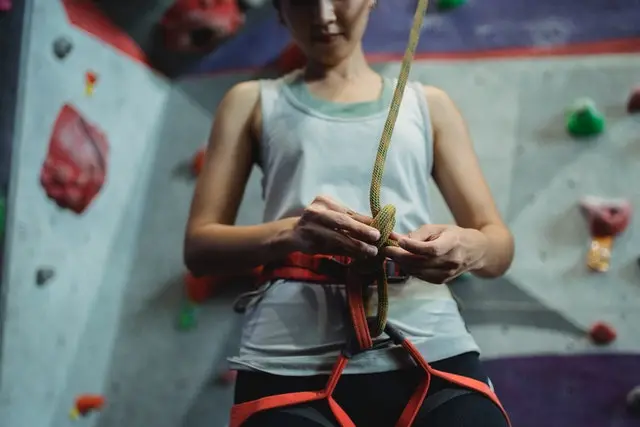

Jak Trenować Podczas Sezonu
Wspinając się w skałach nie używamy wszystkich naszych cech takich jak moc, siła, wytrzymałość lub wytrzymałość siłowa. Wspinając się miesiąc po długich drogach, stracimy moc i siłę, tylko boulderując stracimy wytrzymałość. Ważne jest żeby przyjść raz w tygodniu na ściankę i zrobić trening skupiony na aktywność, której ostatnio nie robiliśmy.
Przykład:
- Poniedziałek - Chwytotablica i Bouldering (60min)
- Środa - Skały szybkie RP
- Piątek - Skały projekt
- Sobota - Skały wspinanie na ilość (12 dróg)
Trenując tak będziemy cały czas w formie i nie stracimy naszej siły mocy czy wytrzymałości a wręcz przeciwnie, nasz poziom będzie się podnosił.